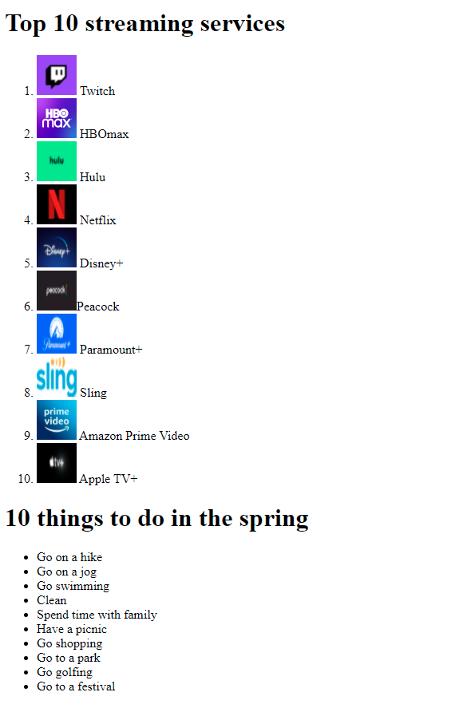
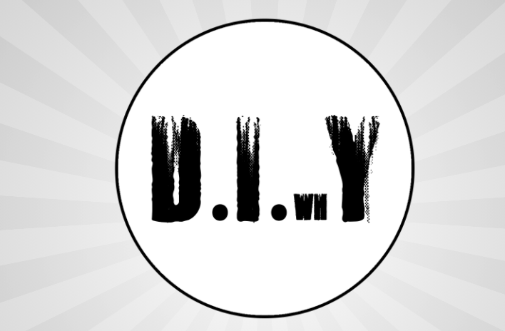
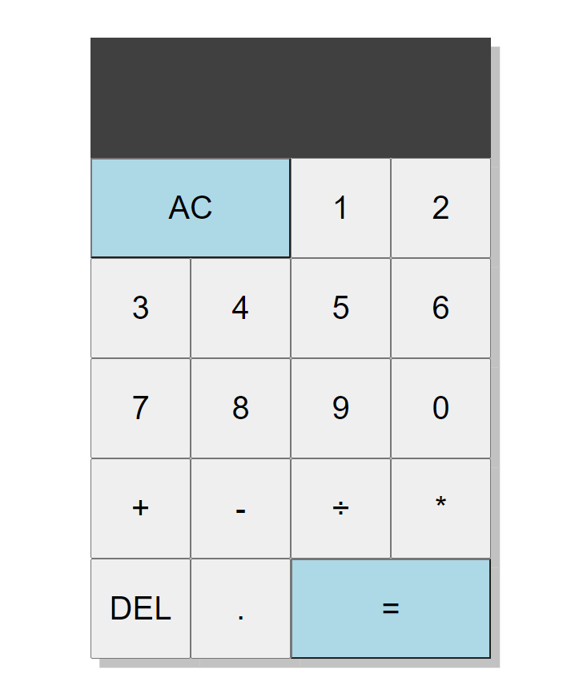
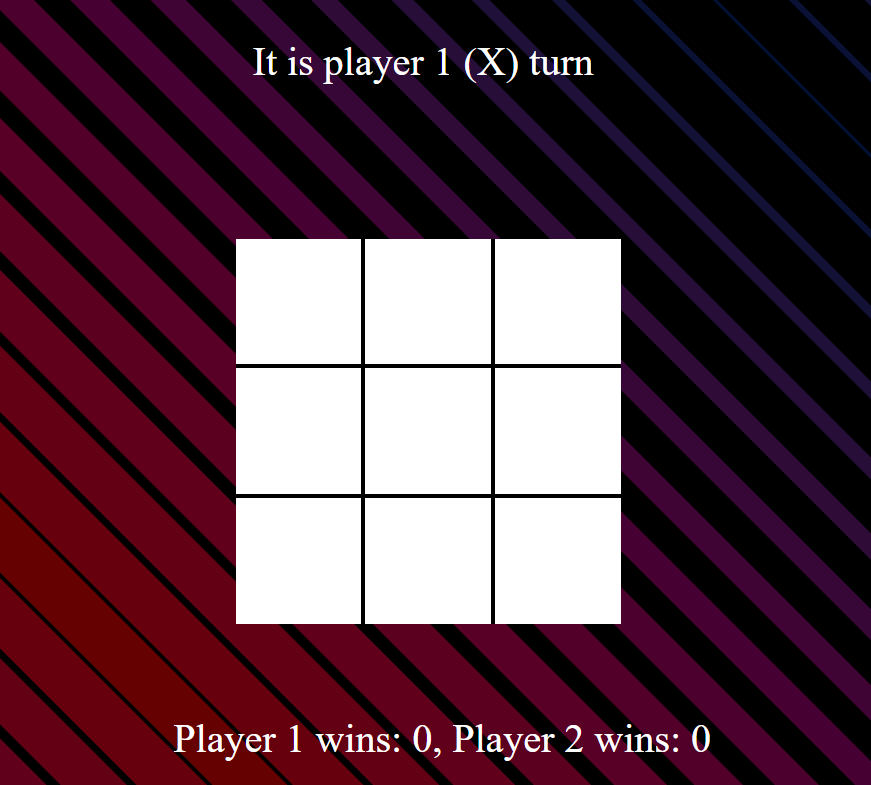
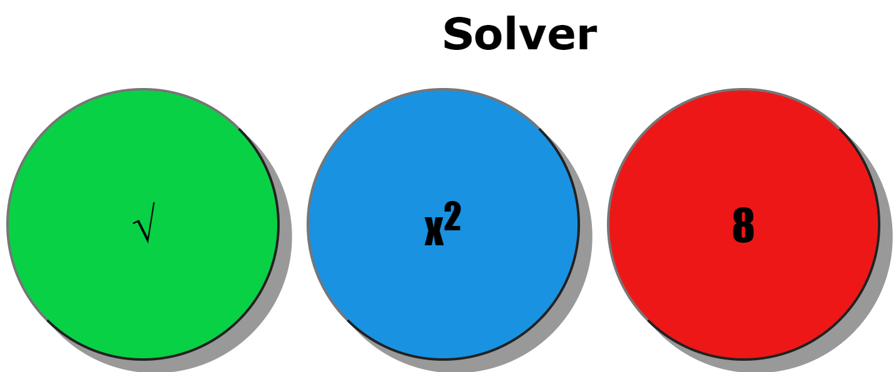

Portfolio Page
Projects
Resume
Contact Me

This is one of my earliest projects I made, practing ol and ul
In this project I decided to have fun with it and created a profile for a meme

In this project I created a fake businesses web page.The fake businesses is horribel diy projects. we [me and my partner] used CSS and HTML for all the pages. I am the most proud of this project because how well it turned out.

In this project I made a basic computer calculator.

In this project I made a tictactoe game you can play with other people.

In this project I made an 8 ball, and sqrt and squared solver.